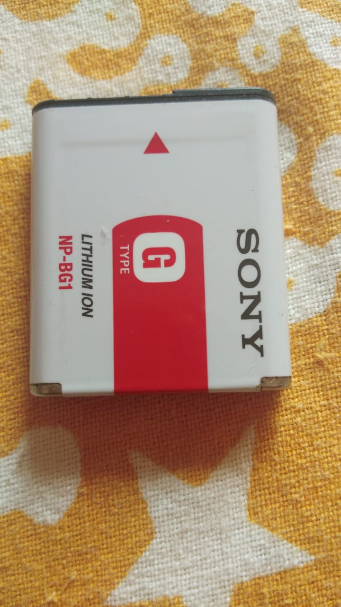
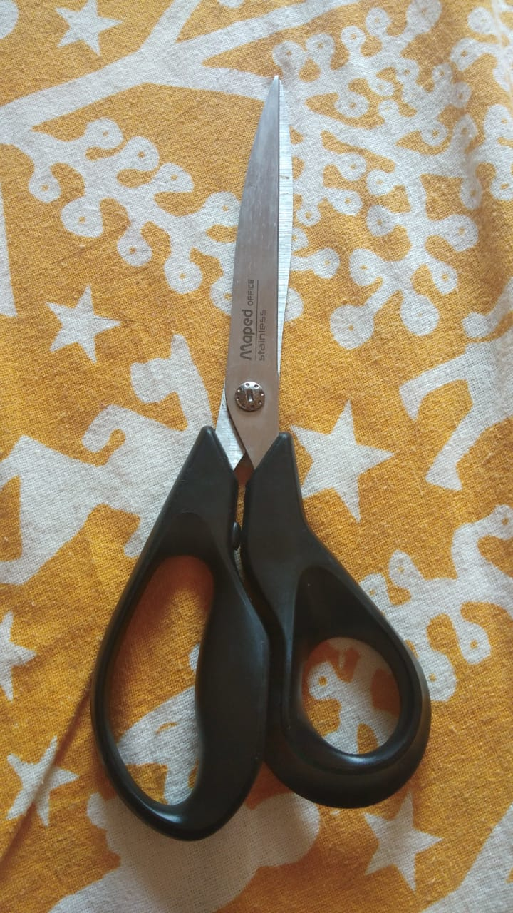

Case study between Google lens and Mobilenet
Google lens
Vs
Mobilenet
1.test Image

output on google lens:
first-aid kit
output on Mobilenet:
switch, electric switch, electrical switch
Result :
Mobilenet is more accurate than Google lens.
1.test Image

output on google lens:
scissors
output on Mobilenet:
Holster
Result :
Mobilenet is less accurate than Ggogle lens.